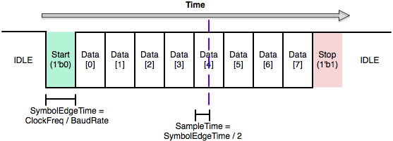

什么是总线 (BUS)
In computer architecture, a bus is a communication system that transfers data between components inside a computer, or between computers. This expression covers all related hardware components and software, including communication protocols.
- 抽象的是: 总线并不是一条"线"，而是一种通信协议规范，就像 ISA 一样，是需要软件硬件协同的一种规范。
- 更抽象的是: BUS 属实让人眼前一黑，读读机翻你就老实了，虽然确实是数据的"公交车"🤣
广义总线:
- USB (通用串行总线) / 雷电接口 (Thunderbolt interface)
- TCP/IP
狭义的总线 - 硬件模块间的通信协议
为什么需要总线
模块间需要通信
- 不同的计算机通过互联网通信
- 软件之间需要通信(前端、后端)
+-----+ +-------------------+ +---------------+
| CPU | <==> | Memory Controller | <==> | Memory Device |
+-----+ +-------------------+ +---------------+
- CPU和内存控制器通过一套协议通信
- 内存控制器和内存颗粒通过另一套协议通信
+-----+ +-----+
| IFU | inst ---> | IDU |
+-----+ +-----+
- CPU内部模块也需要通过信号通信
最简单的总线
+-----+ +-----+
| IFU | inst ---> | IDU |
+-----+ +-----+
主动发起通信的模块叫master(主设备), 响应通信的模块叫slave(从设备)
其实背后藏着一套通信协议
- master(IFU)往slave(IDU)发送消息(当前指令inst)
- 双方约定, 只要master发送, slave立即收到
- IFU并非每周期都能取到指令
- IDU需要等待IFU完成取指后, 才能进行译码
集中式控制
也就是常见的课本上的处理器
+--------------+
+-------------> | Controller | <--------------+
| +--------------+ |
| ^ ^ |
v v v v
+-----+ inst +-----+ ... +-----+ ... +-----+
| IFU | ------> | IDU | ------> | EXU | ------> | WBU |
+-----+ +-----+ +-----+ +-----+
集中式控制 - 控制器需收集所有模块状态, 并决定如何控制各模块工作
- 可扩展性较低, 随着模块数量和复杂度提升, 控制器越来越难设计
- 各模块可能会工作多个周期(访存延迟, 除法器)/冲刷/阻塞
更真实的处理器
IFU 在一些周期可能输出无效的inst，IDU 在一些周期可能无法处理即将到来的inst:
- slave(IDU) 需要知道什么时候 master(IFU) 的信号
inst有效 - master(IFU) 需要知道什么时候 slave(IDU) 空闲
+-----+ inst ---> +-----+
| IFU | valid ---> | IDU |
+-----+ <--- ready +-----+
- 需要添加valid(有效)和ready(就绪)信号, 通信协议如下
- master(IFU)往slave(IDU)发送消息(当前指令inst)
- 双方约定, 若master发送, 则ready有效时, 才认为slave收到
- 上述发送行为仅在valid有效时发生
更真实的处理器 (2)——分布式控制
- 异步总线:
- 当 valid & ready 时，称为"握手"🤝
- 当 valid & !ready 时，master 需要保持信号
- master 的 valid 不应该依赖于 slave 的 ready，反之亦然
+-----+ inst ---> +-----+ ... ---> +-----+ ... ---> +-----+
| IFU | valid ---> | IDU | valid ---> | EXU | valid ---> | WBU |
+-----+ <--- ready +-----+ <--- ready +-----+ <--- ready +-----+
- 单周期 - 每周期上游发送的消息均有效, 下游均就绪接收新消息
- 多周期 - 模块空闲时消息无效, 模块忙碌时不接收新消息, IFU收到WBU的完成信号后再取下一条指令
- 流水线 - IFU一直取指, 各模块每个周期都尝试往下游发送消息
- 乱序执行 - 下游模块有一个队列, 上游只需要把消息发到队列, 即可继续处理新消息
系统总线
+-----+ +-----+
| CPU | <==> | DEV |
+-----+ +-----+
并行总线
系统总线 = 连接处理器和存储器以及设备之间的总线
读操作：
+-----+ araddr[log2(N)-1:0] ---> +-----+
| | arvalid ---> | |
| | <--- arready | |
| CPU | <--- rdata[31:0] | MEM |
| | <--- rvalid | |
| | rready ---> | |
+-----+ +-----+
- master发出araddr的时刻无法提前确定
- slave也不一定总是准备好接受读取请求
- slave读出rdata的时刻无法提前确定
- master也不一定总是准备好接收slave读出的数据
写操作:
+-----+ +-----+
| | waddr[log2(N)-1:0] ---> | |
| CPU | wdata[31:0] ---> | MEM |
| | wmask[3:0] ---> | |
| | wvalid ---> | |
+-----+ +-----+
同理, 写请求也需要握手
错误请求: 读写请求可能会出错, 例如超过存储区间的边界
+-----+ <--- bresp[1:0] +-----+
| CPU | <--- bvalid | MEM |
+-----+ bready ---> +-----+
AXI-Lite 总线
araddr ---> -+ awaddr ---> -+
arvalid ---> AR awvalid ---> AW
<--- arready -+ <--- awready -+
<--- rdata -+ wdata ---> -+
<--- rresp | wstrb ---> |
<--- rvalid R wvalid ---> W
rready ---> -+ <--- wready -+
<--- bresp -+
<--- bvalid B
bready ---> -+
- 独立的地址/控制和数据阶段
- 支持使用字节选通的未对齐数据传输。
- 独立的写入和读取数据通道，可提供低成本的直接内存访问(DMA)
串行总线
缺点:
- 传输效率低: 数据需要多周期传输
- 逻辑复杂: 需要处理时钟同步等问题
优点:
- 布线简单: 导出的引脚较少，降低了布线复杂性和成本
- 抗干扰能力强: 信号干扰较小
UART
+-----+ +-----+
| TX | data ---> | RX |
+-----+ +-----+
UART把数据的字节按照比特顺序发送。
另一端的UART把比特组装为字节。
通信可以是单工、全双工或半双工。

SPI

SPI总线总共只有4种信号:
- SCK - master发出的时钟信号, 只有1位
- SS - master发出的选择信号, 用于指定通信对象, 每个slave对应1位
- MOSI - master向slave通信的数据线, 只有1位
- MISO - slave向master通信的数据线, 只有1位
SPI 总线是全双工的。
片间总线协议
SoC = System On Chip
CPU != System
SoC = CPU + 总线 + 设备(含内存)
一个现实 - 设备的属性五花八门
- 地址空间, 访问位宽, 接口协议, 可写, 可执行, 非对齐访问, 原子操作, 突发访问, 中断, DMA, 可缓存, 幂等性…
实际中还要考虑电气特性
- 有的设备无法在高频工作, 需要实现多个时钟域之间的异步通信
- 有的设备需要固定频率的时钟作为参考时钟
- 有的设备对复位顺序的先后有要求
将总线延伸到片外
一个想法: 将总线延伸到芯片外部
- 两个芯片可以在遵循同一套通信协议的情况下互相通信
- 一个芯片就可以访问其他芯片成品上的设备
- 后者一方面不占用流片面积, 从而节省流片成本
- 另一方面也可以降低验证的复杂度和流片风险
但是需要减少引脚导出的数量:
- 对引脚进行分时复用: 综合并行总线和串行总线的特点
- 每次传输AXI请求的一部分, 通过多个周期来传输一个完整的AXI请求
ChipLink
全双工, 单方向除了32个数据信号之外, 还有时钟, 复位和有效信号
标准的ChipLink协议需要占用70个引脚
可通过桥接转换实现AXI的片间传输
-------------------+ +-------------------
chip 1 | | chip 2
AXI <=> ChipLink <---------> ChipLink <=> AXI
| |
-------------------+ +-------------------
数据位宽减少到8位时, 只需要占用22个引脚
- 但要付出传输带宽的代价: 需要花费更多周期才能完整传输一个请求
- 封装成本和传输效率之间的权衡
ChipLink + FPGA
若对端芯片是个FPGA, 还能获得灵活的扩展能力

- 只需要将设备控制器烧录到FPGA中, 芯片就可以访问这些设备
- 只要FPGA足够高级, 可以连接现代DDR/PCI-e
- 设备控制器有bug也不会带来灾难性的后果, 修复bug后重新烧录即可
- 缺点: 带宽低(用性能换来的灵活性)